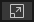
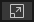

Unity-specific variable types include GameObject, Transform, Text, and any public scripted Class that you create. Each of these can be the type of a variable!
1) Create an Empty Game Object:
- In the top menu GameObject > Create Empty.
In Inspector reset Transforms (so all Position and Rotation values = 0, all Scale = 1).
- Name it "Tree", hit [Enter] to commit the name.
 2) Download this PNG image:
tree
2) Download this PNG image:
tree
- Click open, RightClick, choose "Save Image As", choose Desktop as location.
- In Unity import this image into your Project: RightClick the Project panel Assets folder, choose "Import New Asset", and browse your Desktop to select the image.
3) With the tree .png selected in the Project > Assets folder, set parameters in the Inspector.
Since this is a piece of pixel art, change to the following:
- Pixels Per Unit = 16 Filter Mode = Point (no filter)
- Compression = None
hit
[Apply] to complete these changes.
4) Drag the tree PNG into the
Hierarchy panel. Note the image appears in the Scene panel.
Please avoid selecting any object in Scene:
only select objects by name in the Hierarchy.
- In the Inspector name the selected image "tree_art" (hit [Enter] to commit). Reset Transforms (so it is the same Position as the Tree object: 0, 0, 0).
- In the Hierarchy Drag tree_art onto the Tree object to make it a child of Tree.
5) Create a new C# script (RightClick Project > Assets panel, choose Create > C# script. in Unity 6 this is Create > MonoBehaviour Script).
- Name it "DisplayChange.cs", hit [Enter] to commit.
DoubleClick your script to open it in your editor.
As seen below, add one Class variable at the top: public GameObject treeArt;
- add one command line in the Start() function:
treeArt.SetActive(false);
using UnityEngine;
using System.Collections.Generic;
using System.Collections;
public class DisplayChange : MonoBehaviour {
public GameObject treeArt;
void Start(){
treeArt.SetActive(false); //this command disables the referenced object
}
Save the script ([Ctrl/Cmd]+[s]).
- In Unity drag the script to the Tree object to apply it.
Then fast-drag the tree_art object in the Hierarchy into the "Tree Art" script slot.
- Hit [Play], and your art disappears. Note tree_art in Hierarchy turns gray.
6) Now, let's make make it interactive by adding an if-condition that
LISTENS for input in the Update() function:
void Update(){
if (Input.GetKeyDown(KeyCode.Space)){
treeArt.SetActive(true);
}
}
}
Save the script ([Ctrl/Cmd]+[s]).
Hit [Play]. Your art disappears. Which keyboard key can you hit to bring it back?
Note C# syntax in Unity offers two ways to call a keyboard button in an if-condition:
if (Input.GetKeyDown(KeyCode.Space)){
if (Input.GetKeyDown("space")){
7) Now, make it a toggle (so it can be hit repeatedly to turn it on and off):
Create a new Class variable to go at the top: public bool isVisible = true;
using UnityEngine;
using System.Collections.Generic;
using System.Collections;
public class DisplayChange : MonoBehaviour {
public GameObject treeArt;
public bool isVisible = true;
Replace the entire Update() function with this one:
void Update(){
if (isVisible == true){
treeArt.SetActive(true);
} else {
treeArt.SetActive(false);
}
if (Input.GetKeyDown(KeyCode.Space)){
isVisible = !isVisible;
}
}
Save the script. Hit [Play], and hit the [Spacebar] to toggle the tree visibility!
Here is the entire DisplayChange.cs script to copy and paste:
DisplayChange.cs script:
using UnityEngine;
using System.Collections.Generic;
using System.Collections;
public class DisplayChange : MonoBehaviour {
public GameObject treeArt;
public bool isVisible = true;
void Start(){
treeArt.SetActive(false);
}
void Update(){
if (isVisible == true){
treeArt.SetActive(true);
} else {
treeArt.SetActive(false);
}
if (Input.GetKeyDown(KeyCode.Space)){
isVisible = !isVisible;
}
}
}
NOTE: The Start() function no longer seems to turn off the object visibility!
Can you see why?
COROUTINES / IENUMERATOR:
A Coroutine is an IEnumerator function that manages a time delay.
(Programmers: This is a function specific to Unity to make up for the lack of multi-threading).
All IEnumerators return a "yield" value (not just "void" like in Start() and Update()).
A common yield command to create a delay is:
yield return new WaitForSeconds(1f);
1f = one second of delay. 0.5f = half a second. 2f = two seconds, etc.
NOTE: Include multiple yield commands for multiple delays between other commands, for flashing colors, a sequence of screenshakes, etc.
The bold-faced content below adds a Coroutine to the DisplayChange.cs script, to make the tree disappear a couple of seconds after we make it re-appear.
This needs three parts:
An IEnumerator function (bottom)
An Update() command to activate it: StartCoroutine();.
DisplayChange.cs (new content in bold):
using UnityEngine;
using System.Collections.Generic;
using System.Collections;
public class DisplayChange : MonoBehaviour {
public GameObject treeArt;
public bool isVisible = true;
void Start(){
isVisible = false; //new command to disable the object through the bool
}
void Update(){
if (isVisible == true){
treeArt.SetActive(true);
} else {
treeArt.SetActive(false);
}
if (Input.GetKeyDown(KeyCode.Space)){
isVisible = !isVisible;
StartCoroutine(DelayTreeAway());
}
}
IEnumerator DelayTreeAway(){
yield return new WaitForSeconds(2f);
isVisible = false;
}
}
Hit Play, hit the [spacebar] to make the tree visible, then wait two seconds to see the tree disappear again on its own!
HOW-TO NOTES:
TURN OFF AN OBJECT IN THE EDITOR:
An Object can be "turned off"
(disabled) by selecting it in the Hierarchy, then in the Inspector click-off the little check-box in the top-left corner. Scripts on a disabled Object will not run until the Object is enabled again.
TURN OFF A SCRIPT ON AN OBJECT:
Individual scripts on an object can be disabled by turning off their own check-box (if they have a Start() function). This disables messages to the Update() functions.. Some functions, like OnTriggerEnter(), may still run if the object is still enabled.
REMOVE A SCRIPT FROM AN OBJECT:
Sometimes it is better to remove an unwanted script Component.To remove a script or any other Component on a given object, RightClick the name of the script and choose "Remove Component".
ERROR NOTE: "Unassigned Reference Exception"
When you try to run the game do you get an "Unassigned Reference Exception"?
This happens when the code tries to do something to an object that has not been assigned in the script.
In the case of this tutorial, you likely missed the step in Unity when you are supposed to fast-drag tree_art into the "treeArt" script slot on Tree.
Please follow these steps:
- In the Hierarchy, select Tree.
In the Inspector, see Tree's properties, including the DisplayChange.cs Component and empty Script Slot called "treeArt".
- Select and fast-drag tree_art into the artThing slot, to assign it to that variable.
NOTE: "Select and fast-drag" is a mouse technique that takes some practice.
If you just select the object, the Inspector changes to show the new object you have selected, which prevents you from dragging that object into the other object's script slot.
If this happens, just re-select Tree and try fast-dragging tree_art again.
Once the art is assigned to the slot, your script should no longer show this error.


 ,
Rotate [e]
,
Rotate [e]  ,
Scale [r] 
,
Scale [r] 
 for panning in the scene.
for panning in the scene.  at top of Scene view, and Orbit around:
at top of Scene view, and Orbit around: